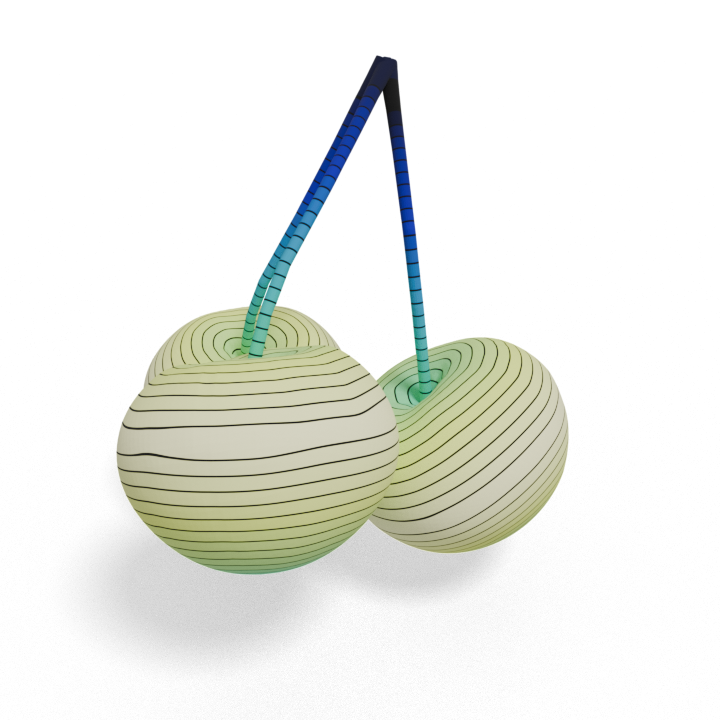
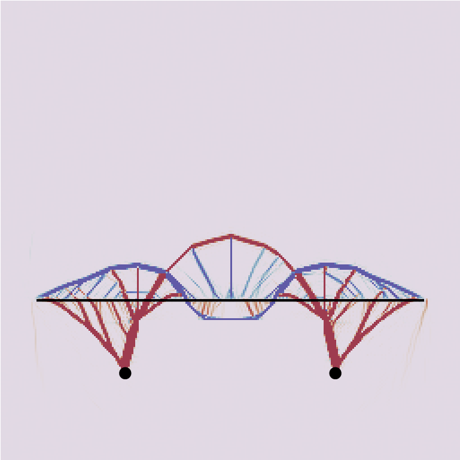
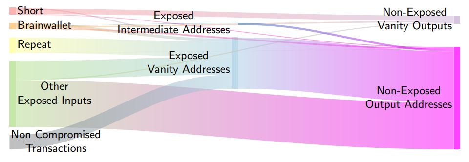

|
Dylan Rowe
I’m a Computer Science PhD student at USC, advised by Oded Stein. I mainly focus on geometry processing and computer graphics, but have broad interests within computational mathematics. My research applies geometric ideas to computational problems.
Please see my CV for more information on my previous work. I also have a Github.
Contact me at dylanr@usc.edu.
|
|
|

|
Sharpening and Sparsifying with Surface Hessians
Dylan Rowe, Alec Jacobson, Oded Stein
SIGGRAPH Asia 2024
We introduce an intrinsic discretization of the L1 Hessian energy, which encourages ridge-like features and local linearity. We apply it to stylization, denoising, interpolation, hole-filling, and segmentation tasks.
|
|

|
Sparse Stress Structures from Optimal Geometric Measures
Dylan Rowe, Albert Chern
SIGGRAPH Asia 2023
We compute sparse optimal structural designs by finding a minimal tensegrity structure — a network of cables and struts in equilibrium with a given loading force.
|
|

|
The curious case of the half-half Bitcoin ECDSA nonces
Dylan Rowe, Joachim Breitner, Nadia Heninger
AfricaCrypt 2023
We report on a new class of ECDSA signature vulnerability observed in the wild on the Bitcoin blockchain, develop a lattice-based attack for recovering the secret key from a single given signature, and search the entire Bitcoin blockchain for such signatures.
|
|
{kind=link}